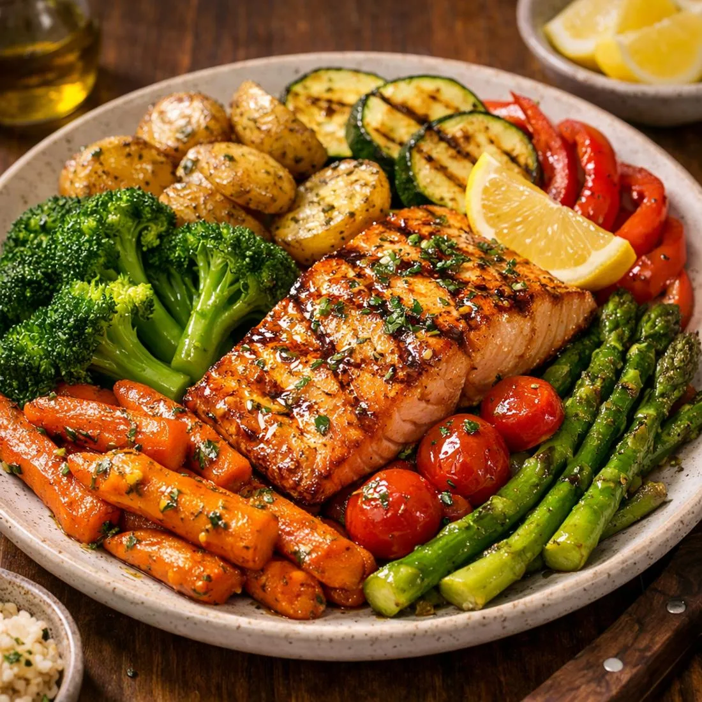
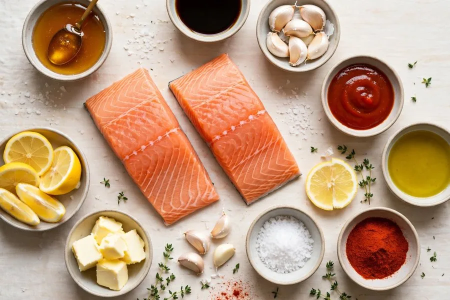
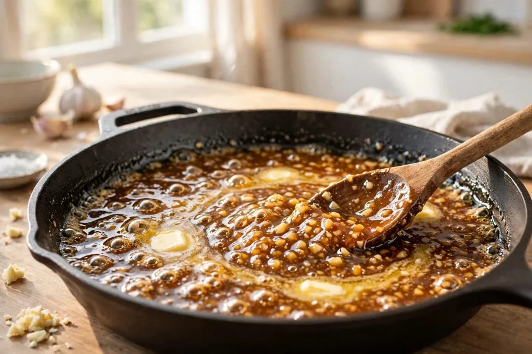
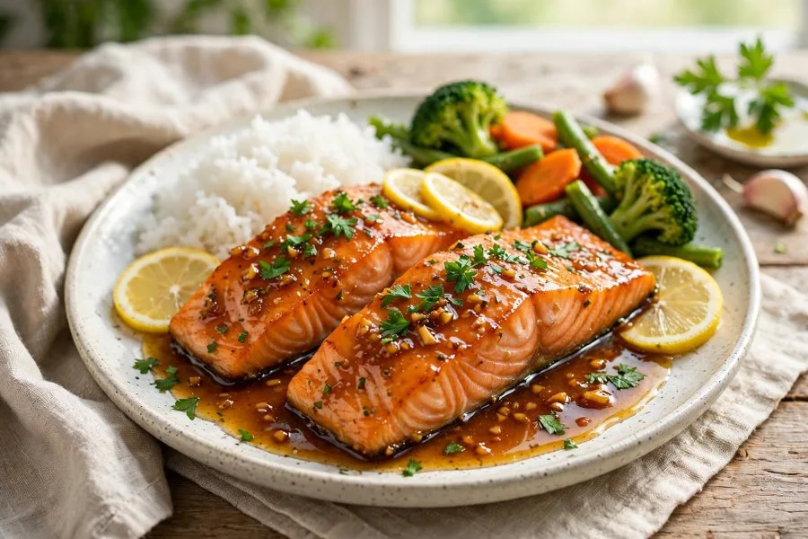

← Back to all recipes · Dinner
Honey Garlic Salmon
Honey garlic glazed salmon is sweet honey, fragrant garlic and salty soy sauce, all in one pan. Golden and sticky on the outside, soft and juicy on the inside — a main course that suits a special dinner just as well as a family meal. And the whole thing takes only about 18 minutes.
Prep: 8 minutes · Cook: 10 minutes · Method: Pan-fried, then oven-broiled
Jump to recipe ↓ 📌 Pin this recipe
Why you will love this salmon
The honey gives the glaze its sweetness and sticky finish, the garlic brings the aroma, and soy sauce and lemon keep it balanced — never too sweet. Everything cooks in one oven-safe pan, the ingredients are easy to find, and the salmon broils in the oven to a golden, caramelised top. Serve it straight from the pan, spooned over with the extra sauce.
Honey Garlic Salmon — full recipe
Ingredients

- For the salmon
- 4 salmon fillets, about 170 g each
- ½ tsp salt
- ½ tsp black pepper
- ½ tsp smoked paprika (or regular paprika)
- ¼ tsp blackening seasoning (optional)
- For the honey garlic sauce
- 3 tbsp butter (about 42 g)
- 2 tsp olive oil
- 6 garlic cloves, finely chopped
- ½ cup honey (about 120 ml)
- 3 tbsp water
- 3 tbsp soy sauce
- 1 tbsp Sriracha hot sauce
- 2 tbsp fresh lemon juice
- To serve
- A little chopped fresh parsley
- A few lemon slices (optional)
Method — step by step
- Step 1 — Prepare the salmon. Take the salmon out of the fridge and pat it dry gently with clean kitchen paper. Place the four fillets on a clean plate. Mix the salt, black pepper and paprika together — add the blackening seasoning too, if you are using it — and rub the spice mix evenly over both sides of every fillet. Set aside. Chef tip: buy fresh, good-quality salmon. Skin-on or skinless both work for this recipe.
- Step 2 — Get the oven ready. Set the oven to Broil (Grill) on High, with the rack in the middle, and let it preheat. Important: do not put the rack in the highest position — honey in the sauce can burn quickly at very high heat and turn bitter.
- Step 3 — Make the honey garlic sauce. Put a large oven-safe pan on the heat. Add the butter, and when it starts to melt, add the olive oil. Add the chopped garlic and stir gently for a few seconds — do not let it brown or burn. Then add the honey, water, soy sauce, Sriracha and lemon juice, and stir everything together well. Warm the sauce for about 30 seconds. It will smell of honey, garlic and lemon; it does not need to be thick at this stage. Chef tip: if the sauce looks too thin, warm it a little longer on gentle heat before adding the fish — but do not overheat it, or the honey will burn.

- Step 4 — Cook the salmon in the sauce. Once the sauce is hot, add the seasoned fillets to the pan — skin-side down if they have skin. Leave space between the fillets so they do not stick together. Cook for about 3 minutes; there is no need to flip the salmon. While it cooks, spoon the sauce from the pan over the tops of the fillets, again and again, so the honey-garlic flavour soaks in. Chef tip: salmon is delicate — do not stir or press it hard with a spoon, or the fillets can break apart.
- Step 5 — Broil in the oven. This is when the sauce on top turns golden and caramelised. Put the pan, just as it is, on the middle rack of the preheated oven and broil on High for 5–6 minutes. Halfway through, take the pan out carefully, spoon the sauce over the salmon again, and put it back to finish. It is done when the top is golden and the sauce has become a sticky, caramelised coating. Watch it closely — honey burns very fast under the broiler, and cooking time varies with the thickness of the fillets.
- Step 6 — Check it is cooked. The top should be golden from the sauce, the inside should not look raw or translucent, and the flesh should flake easily into natural layers when touched gently with a fork. If you have a food thermometer, the thickest part should reach 63°C (145°F). Do not overcook it — overcooked salmon dries out and turns tough.
- Step 7 — Garnish and serve. Take the salmon out of the oven and let it rest for about a minute. Sprinkle with chopped parsley, add a few lemon slices beside it, and spoon the remaining honey garlic sauce from the pan over the top. Serve hot.

What to serve with it
This salmon is delicious on its own, but a side or two turns it into a complete meal:
- White rice — plain hot rice is perfect with the honey garlic sauce.
- Garlic butter rice — the garlic and butter flavours match the salmon beautifully.
- Mashed potatoes — soft mash with the sweet sauce is a lovely combination.
- Steamed vegetables — carrots, broccoli and beans, simply steamed.
- Fresh salad — lettuce, cucumber, tomato and lemon juice for a fresh contrast.
Chef tips
- Choose fresh salmon. Buy the freshest, best-quality salmon you can. If using frozen, thaw it safely in the fridge before cooking.
- Do not burn the garlic. Garlic fried too long in hot butter and oil turns bitter — stir it for a few seconds, then add the rest of the sauce quickly.
- Use good honey. Real, natural honey gives the sauce its sweetness and sticky texture.
- Balance the sauce. Honey brings sweetness, soy sauce brings salt, and lemon brings sourness — the three together are what make the sauce work.
- Do not overcook the salmon. Stick to the times given; cooking time varies with the thickness of the fillets, so watch for the flakes.
- Watch the broiler. Honey caramelises fast, then burns — do not leave the salmon in the oven and forget about it.
Variations
- Lemon honey garlic salmon — add a little finely grated lemon zest to the sauce for extra lemon aroma and freshness.
- Lime honey garlic salmon — use lime juice instead of lemon juice for a slightly different, sharper sourness.
- Spicy honey garlic salmon — increase the Sriracha to suit your taste, if you like things hotter.
- Green onion salmon — sprinkle finely chopped green onions over the finished salmon for a fresh flavour and aroma.
- Pan-seared honey garlic salmon — no oven? Sear the seasoned salmon on both sides in a pan, move it to a plate, make the sauce, then return the salmon to the pan and finish cooking in the sauce on gentle heat. The top will not caramelise quite like the broiled version, but it still tastes wonderful.
Make ahead & storage
This is best eaten hot, straight after cooking. If you have leftovers, do not leave them at room temperature for hours — within 2 hours, put them in an airtight container in the fridge (sooner in a very hot kitchen). Use within 3 days, and reheat thoroughly before eating. Avoid reheating more than once. Fish and seafood spoil quickly, so follow safe food storage.
Frequently asked questions
Can I use a different fish instead of salmon?
Salmon suits this recipe best, but another thick, oily fish can work — cooking time will vary, and take care not to let it dry out.
What if I have no Sriracha?
Use any hot sauce you like, or leave it out completely if you do not like heat.
Should I remove the skin?
No — skin-on or skinless both work. If using skin-on, put the skin side down in the pan.
Can I make it without an oven?
Yes — cook the salmon well on both sides in a pan, add the sauce, and finish on gentle heat. The caramelised top from broiling will be different, but it still works.
What if the sauce is too thin?
Warm it a little longer on gentle heat before adding the fish, to reduce the liquid — or use a little less water.
Kitchen equipment you will need
- An oven with a Broil (Grill) setting
- A large oven-safe pan
- A knife and a cutting board
- A mixing bowl
- Measuring cups and spoons
- A wooden spoon or spatula for stirring the sauce
- A spoon for spooning sauce over the fish
- A serving plate